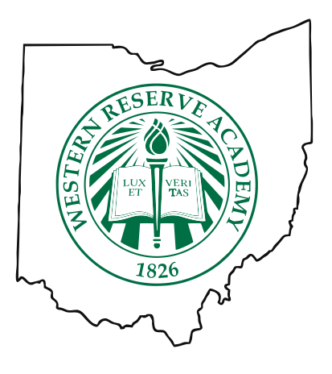
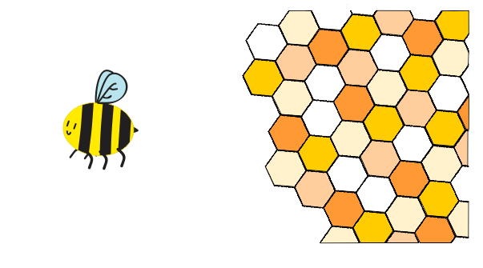

In this unit we focused on various types of printing. This included garment printing, UV printing, and sublimation printing.
For garment printing, I created a t-sht of an outline of Ohio with the Western Resere Academy logo inside of it. The hardest challenge of this was getting a high quality version of the WRA logo into CorelDraw, which I eventually acomplished by turing the Logo into a bitmap.
For the UV printing, I printed on a popsocket. I had misjudged the size of my image, which resulted in the image not fully fitting on the popsocket. It was mostly on the popsocket, however, and was printed properly.

For sublimaation printing, I printed on a neopreme pencil pouch. I had to becareful suring the transfer because after being put in the heat press, it was hot to handle and I had to avoid toughing the zipper so I wouldn't be burned. Thankfully, I managed to not burn myself and the design transfereed with no problems.
 Back to Index